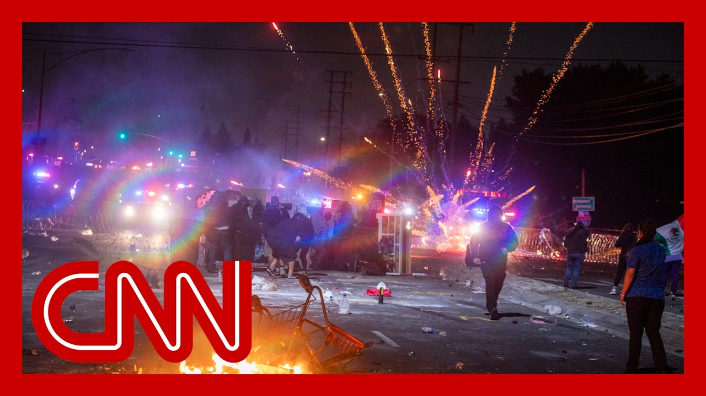

【洛杉矶市中心全部区域已被宣布为非法集会区】
Summary: Their leaders may protest in the streets, raising concerns about the dangerous situation involving American active troops.
摘要： 他们的领导人可能在街头抗议，引发对涉及美国现役部队的危险局势的担忧。

⏱️ Estimated Reading Time: 18 min
📚 六级生词 📚 雅思生词 📚 托福生词 📚 GRE生词 📚 视频里的生词
A protest over immigration raids have led to arrests in both Los Angeles and San Francisco.
针对移民突袭的抗议活动导致洛杉矶和旧金山多人被捕。
Cars were set on fire, flashbangs and tear gas were used to disperse crowds.
车辆被点燃，闪光弹和催泪瓦斯被用来驱散人群。
Parts of a major freeway were shut down.
部分主要高速公路被关闭。
This morning marks the fourth day of protests.
今晨标志着抗议活动进入第四天。
You're seeing some of those self-driving cars on fire right now.
你现在看到一些自动驾驶汽车正在燃烧。
All of downtown L.A. has been declared an unlawful assembly area.
洛杉矶市中心全域被宣布为非法集会区。
President Trump called up the National Guard to protect federal personnel and property.
特朗普总统召集国民警卫队保护联邦人员和财产。
It's the first time a president has done this without a state's request or consent.
这是总统首次未经州政府请求或同意采取这一行动。
And about six years.
大约六年了。
Are you prepared to invoke the Insurrection Act?
你准备好动用《叛乱法》了吗？
Depends on whether or not there's an insurrection.
取决于是否存在叛乱。
No, no, but you have violence, people, and we're not going to let them get away with it.
不，不，但你们有暴力行为，人们，我们不会让他们逍遥法外。
That.
就是这样。
You're going to see some very strong law and order.
你们将看到非常强硬的法律与秩序。
500 active duty Marines are also prepared to deploy the entire National Guard situation, setting up a showdown with California's governor.
500名现役海军陆战队员也准备部署整个国民警卫队，与加州州长形成对峙。
He claims the president is putting fuel on the fire.
他声称总统是在火上浇油。
The mayor of Los Angeles accused the president of being heavy handed.
洛杉矶市长指责总统手段强硬。
When you raid Home Depot and workplaces, when you tear parents and children apart, and when you run armored caravans through our streets, you cause fear and you cause panic for every single minute that we were here resisting against the Border Patrol, that was time that they were not out deporting people in our community.
当你们突袭家得宝和工作场所，当你们拆散父母和孩子，当你们让装甲车队穿过我们的街道，你们每分钟都在制造恐惧和恐慌，而我们在这里抵抗边境巡逻队的每一分钟，都是他们没在社区驱逐人们的时间。
But President Trump is urging LA's police chief to bring in the troops right now.
但特朗普总统正敦促洛杉矶警察局长立即调派军队。
Police say at least 27 people were arrested Sunday.
警方称周日至少有27人被捕。
Most of those on the 101 freeway that police shut down.
其中大多数人是在警方关闭的101号高速公路上被捕的。
They say protesters threw things onto the road and damaged police cars.
他们说抗议者向道路投掷物品并损坏警车。
Also overnight, a large crowd protested against Ice in San Francisco.
此外，昨晚旧金山有大群人抗议移民及海关执法局。
About 60 people were arrested there.
大约60人在那里被捕。
Joining me now, CNN senior national security analyst Juliette Kayyem.
现在加入我们的是CNN高级国家安全分析师朱丽叶·凯耶姆。
Juliette, I want to start with some of the history here, because you've pointed out that usually a president can federalize the National Guard.
朱丽叶，我想从一些历史背景开始，因为你指出通常总统可以联邦化国民警卫队。
For instance, when a governor requests those resources, when a governor says, look, I'm overwhelmed, I think back to the LA riots.
例如，当州长请求这些资源时，当州长说，看，我 overwhelmed，我回想起洛杉矶骚乱。
Also, Hurricane Katrina, based on what you've observed, is that where we were?
还有卡特里娜飓风，根据你的观察，我们当时处于那种情况吗？
Yes.
是的。
I mean, that's this is this is a big distinction of what Donald Trump did.
我的意思是，这就是唐纳德·特朗普所做之事的重大区别。
And there's a series of cases coming out of desegregation when a governor defied a Supreme Court order and the president, federalized the National Guard to get, children into the schools.
还有一系列来自废除种族隔离时期的案例，当时州长违抗最高法院命令，总统联邦化国民警卫队以确保儿童进入学校。
So that's a pool of those cases.
所以这是一系列类似案例。
More recently, the time, an instances where a governor has requested additional federal support in the form of federalized National Guard assets or troops.
更近期的例子是州长请求以联邦化国民警卫队资产或部队的形式获得额外联邦支持。
that has always been with the cooperation of the of the governor and the federal government.
这通常是在州长和联邦政府合作的情况下进行的。
So Hurricane Katrina, you exactly. noted.
所以卡特里娜飓风，你准确地指出了。
And the LA riots in the past, a Republican governor and a Democrat Democratic mayor of Los Angeles, both requested this from the president.
而过去的洛杉矶骚乱中，一位共和党州长和一位民主党洛杉矶市长都向总统提出了这一请求。
and they were deployed.
然后他们被部署了。
I want to say something that simply because they're deployed doesn't mean it's been successful.
我想说的是，仅仅因为他们被部署并不意味着成功。
I am in this field.
我从事这一领域。
The LA riots deployment of federalized National Guard was considered chaotic, and not very, successful.
洛杉矶骚乱中联邦化国民警卫队的部署被认为是混乱的，并不非常成功。
can you get into that more?
你能详细谈谈吗？
We have heard this argument that it can in some cases, actually, we've heard from the governor I think can inflame or kind of further, fuel backlash.
我们听到过这种论点，认为在某些情况下，实际上，我认为州长可能会激化或进一步助长反弹。
What are you seeing?
你看到了什么？
Yeah.
是的。
So this is a, the white it's hard to determine what the white House is doing right now.
所以这是一个，白宫现在很难确定白宫在做什么。
The president and his team came on very strong on Saturday.
总统和他的团队在周六表现得非常强硬。
You know, using words like insurrection.
你知道，使用诸如叛乱之类的词语。
I think getting people really hyped up about what was going to be happening.
我认为让人们真的对即将发生的事情感到兴奋。
Then there was a delay and now there's a couple hundred troops that are protecting federal buildings.
然后出现了延迟，现在有几百名士兵在保护联邦建筑。
That's an important mission.
这是一项重要任务。
it could have been done with state National Guard.
本可以由州国民警卫队完成。
You didn't need to put them under the president or secretary headset.
你不需要将他们置于总统或部长的指挥下。
And the reason why you don't do that is because state National Guard work regularly with state police and local police, for crowd control, gains.
你不这样做的原因是州国民警卫队通常与州警察和地方警察合作，用于人群控制，取得成效。
The LA is going to be hosting the Olympics.
洛杉矶将举办奥运会。
let's think of a marathon or a big event.
让我们想想马拉松或大型活动。
This is happening all the time.
这一直在发生。
So there's training, there's understanding, there's what we call interoperability.
所以有训练，有理解，有我们所说的互操作性。
The different teams can can communicate with each other.
不同团队可以相互沟通。
When you bring a new entity in.
当你引入一个新实体时。
there's no training, there's no cooperation.
没有训练，没有合作。
there's often chaos and there's, a higher probability of, friendly fire.
通常会出现混乱，而且误伤的概率更高。
This is what happened in the LA riots, is that there was a, there were two instances in which there was almost friendly fires.
这就是洛杉矶骚乱中发生的情况，当时有两次几乎发生误伤。
We do this, to protect or we don't do this in order to protect, the troops and, as well as the first responders.
我们这样做是为了保护，或者我们不这样做是为了保护部队和急救人员。
Juliette Kayyem, CNN, senior national security Analyst.
朱丽叶·凯耶姆，CNN高级国家安全分析师。
Thank you.
谢谢。
has deployed the National Guard to Los Angeles, and that's raised urgent questions about how far the white House will go to enforce its immigration crackdown and how far states can go in resisting.
已向洛杉矶部署国民警卫队，这引发了紧迫问题：白宫将在多大程度上执行其移民打击行动，以及各州能在多大程度上进行抵抗。
President Trump posted on Truth Social that order will be restored, the illegals will be expelled in Los Angeles will be set free.
特朗普总统在Truth Social上发帖称秩序将恢复，非法移民将被驱逐，洛杉矶将获得自由。
The Trump administration is singling out California Governor Gavin Newsom's response to the protests as its main reason for getting involved.
特朗普政府将加州州长加文·纽森对抗议活动的回应作为其介入的主要原因。
If he was doing his job, then people wouldn't have gotten hurt.
如果他尽职尽责，人们就不会受伤。
The last couple of days, Governor Newsom has proven that he makes bad decisions.
过去几天，纽森州长证明了他做出了糟糕的决定。
The president knows that he makes bad decisions, and that's why the president chose the safety of this community over waiting for Governor Newsom to get some sanity.
总统知道他做出了糟糕的决定，这就是为什么总统选择社区的安全而不是等待纽森州长恢复理智。
And the White House's borders are.
而白宫的边界是。
Tom Homan is threatening to arrest anyone getting in the way of immigration enforcement, including Newsom, who says he's ready for a fight.
汤姆·霍曼威胁要逮捕任何阻碍移民执法的人，包括纽森，后者表示他已准备好战斗。
The fear, the horror.
恐惧，恐怖。
The hell is this guy?
这家伙到底是谁？
Come after me.
来找我吧。
Arrest me.
逮捕我。
Let's just get it over with, tough guy.
让我们了结吧，硬汉。
Joining me now in the group chat, CNN politics senior reporter Stephen Collinson, Republican strategist and CNN political commentator Brett Todd, and CNN contributor Lulu Garcia Navarro.
现在加入群聊的是CNN政治高级记者斯蒂芬·科林森、共和党策略师兼CNN政治评论员布雷特·托德和CNN撰稿人露露·加西亚·纳瓦罗。
I was talking during the break about whether or not this is still an immigration story, sort of how we're thinking about this moment can I kind of open it to you guys?
我在休息期间谈到这是否仍然是一个移民故事，某种程度上我们如何看待这一刻，我可以向你们开放讨论吗？
So, this is a very perilous, moment because what we're seeing here is a fight that President Trump wants to have, meaning with blue states, with blue states about immigration, about the rule of law and the way that he views it, and also using, the threat of military force in a way that we haven't seen in this country, federal military force.
所以，这是一个非常危险的时刻，因为我们在这里看到的是特朗普总统想要进行的一场斗争，即与蓝州就移民问题、法治问题以及他看待这些问题的方式，并且以一种我们在这个国家从未见过的方式使用联邦军事力量的威胁。
I mean, there's discussion of deploying Marines for what is a civil disturbance.
我的意思是，有人讨论为一场民事骚乱部署海军陆战队员。
This should be of concern, I think, to many, many people in this country.
我认为这应该引起这个国家许多许多人的关注。
and so I think the context is that, yes, this is about immigration enforcement.
所以我认为背景是，是的，这是关于移民执法的。
Los Angeles is a city where 50%, almost all Latinos, the people who have been protesting peacefully protesting.
洛杉矶是一个50%几乎全是拉丁裔的城市，那些一直在和平抗议的人们。
I'm not talking about the violent protesters here.
我不是在说那些暴力抗议者。
Violence should never be something that's condoned.
暴力永远不应被纵容。
But the people who have been peacefully protesting, sometimes they're a first, second generation, Latinos who are worried about this kind of immigration enforcement.
但那些一直在和平抗议的人们，有时他们是第一代、第二代拉丁裔，他们担心这种移民执法。
And so, you know, this is a complicated issue.
所以，你知道，这是一个复杂的问题。
And something we heard earlier, I think, in a piece of tape with the protesters saying, every moment that we're out here, they're not, he said, in our communities, doing raids, etc..
我们早些时候听到的一些内容，我认为，在一段抗议者的录音中，他们说，我们在外面的每一刻，他们就不会，他说，在我们的社区进行突袭等等。
Brad, what are you thinking when we got to this moment?
布拉德，当我们到达这一刻时，你在想什么？
Because California has a sanctuary policy.
因为加州有庇护政策。
You know, state law forbids local law enforcement, some cooperating with or local governments in cooperating with immigration enforcement.
你知道，州法律禁止地方执法部门或地方政府与移民执法合作。
We have immigration laws that govern the entire land, and California is willfully ignoring them.
我们有管理整个国家的移民法，而加州却故意忽视它们。
California's left wing politicians set this up.
加州的左翼政客们设立了这一政策。
If California had long been cooperating and helping enforce immigration laws all along the way, this would not be.
如果加州长期以来一直合作并帮助执行移民法，就不会这样。
It's not the whole state.
不是整个州。
You do know that some of this is jurisdictions.
你知道其中一些是司法管辖区。
There are certain towns that do.
有些城镇确实这样做。
Yeah, but but there are state law.
是的，但有州法律。
But there's certain towns that absolutely have cooperated with, federal authorities.
但有些城镇绝对与联邦当局合作过。
Shouldn't they all you know, this is part of the issue that is always interesting here, is when Republicans want to talk about states rights, it's about states rights when it is something that they're interested in and not when it is something that perhaps Democrats, and their states are interested in.
难道他们不应该，你知道，这是这里总是有趣的部分问题，当共和党人想谈论州权时，这是关于他们感兴趣的州权，而不是当民主党人和他们的州感兴趣的时候。
And so I think we've all agreed on what immigration laws are.
所以我认为我们都同意移民法是什么。
It's not there's not a state.
这不是没有州。
There's not a state.
没有州。
You're going to talk about this more in the hour.
你将在这一小时内更多地谈论这一点。
So I want to bring in Steven because there is something you mentioned earlier about militarization.
所以我想请史蒂文加入，因为你之前提到了一些关于军事化的事情。
We're going to come back to your point.
我们将回到你的观点。
But having Marines waiting in in the wings is pretty wild, because this is not the L.A. riots so far, not what I remember growing up with in 2021.
但是让海军陆战队员待命是相当疯狂的，因为这到目前为止不是洛杉矶骚乱，不是我2021年成长过程中记得的。
Surprise.
惊喜。
The second Brad.
第二个布拉德。
So, Steven, brought up this thing saying that, the president is not just demonstrating his desire to militarize the crack on undocumented migrants, but also implying to use it against protest and dissent.
所以，史蒂文提出了这一点，说总统不仅展示了他对无证移民打击军事化的愿望，还暗示要将其用于对抗抗议和异议。
Is is that what you see when you look at these images?
当你看到这些图像时，是这样吗？
I think that's the imagery that the administration is creating.
我认为这是政府正在创造的图像。
the president tweeted in the middle of the night or posted on True Social, whatever it is now, bring in the troops.
总统在半夜发推文或在True Social上发帖，不管现在叫什么，调派军队。
He wants us to have that imagery of troops on the streets, I think.
我认为他希望我们拥有军队在街上的那种图像。
But that's good.
但那很好。
People are seeing this imagery, right?
人们正在看到这种图像，对吧？
I mean, if you look at the cover of the post today, dozens of thugs arrested as First National Guard troops, you know, once or two.
我的意思是，如果你看看今天邮报的封面，数十名暴徒被捕，因为第一批国民警卫队，你知道，一两次。
Yeah, I think Gavin Newsom absolutely went that common.
是的，我认为加文·纽森绝对走了那条路。
he said that we saw about him, you know, potentially being arrested.
他说我们看到了关于他可能被捕的消息。
He clearly wants this.
他显然想要这个。
He's politicking to become as well.
他也在为成为而进行政治活动。
I mean, there's a lot of peacocking going on, but from the administration's point of view, Trump was elected on a mandate of, strong border policy.
我的意思是，有很多炫耀的行为，但从政府的角度来看，特朗普是以强硬的边境政策为纲领当选的。
He sees that, he wants to push that as far as he can.
他看到了这一点，他想尽可能地推动这一点。
He's sending a message to other Democratic states who he believes do not, cooperate with the administration.
他正在向其他他认为不与政府合作的民主党州
Their leaders are two people who might try and protest in the streets.
他们的领导人是两个可能会试图在街头抗议的人。
How do you mean, exactly?
你具体是什么意思？
The message he's sending.
他传达的信息。
Yeah, and but I think to that point I've made in the story, you know, and to your point about the Marines, this is a dangerous, moment.
是的，但我想我在报道中提到的这一点，以及你关于海军陆战队的观点，这是一个危险的时刻。
The the idea of American active troops even being talked about on the street.
美国现役部队甚至被街头讨论的想法。
I remember I was in New Orleans after the hurricane.
我记得飓风过后我在新奥尔良。
You had the 82nd airborne there, and they were there on a much different mission.
那里有第82空降师，他们执行的任务截然不同。
But seeing American active duty troops on a combat patrol, walking through the streets of an American city is a chilling image.
但看到美国现役部队在战斗巡逻中走过美国城市的街道，是一个令人不寒而栗的画面。